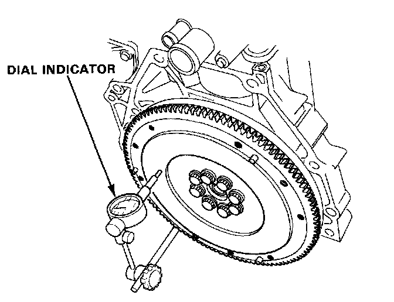
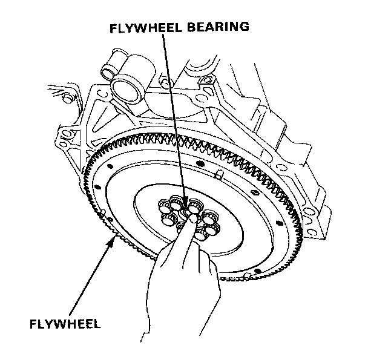

Flywheel: Testing and Inspection
Inspection1. Inspect the ring gear teeth for wear or damage.
2. Inspect the clutch disc mating surface on the flywheel for wear, cracks or burning.

3. Measure the flywheel runout using a dial indicator through at least two full turns. Push against the flywheel each time you turn it to take up the crankshaft thrust washer clearance.
NOTE: The runout can be measured with engine installed.
Standard (New): 0.05 mm (0.002 in.) max.
Service Limit: 0.15 mm (0.006 in.)

4. Turn the inner race of the flywheel bearing with your finger. The bearing should turn smoothly and quietly. Check that the bearing outer race fits tightly in the flywheel. Replace the bearing if the race does not turn smoothly, quietly, or fit tight in the flywheel.